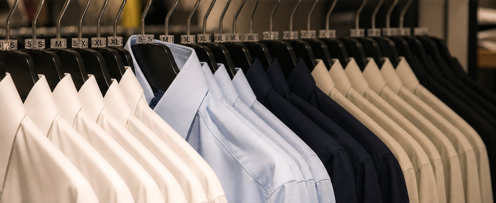

Requirement Review
Understand product details, use scenarios and project constraints.
About Lingfeng
A China-based apparel manufacturer focused on workwear, uniforms, business clothing and functional protective garments.
Company introduction
Beijing Lingfeng Apparel Co., Ltd. is a China-based apparel manufacturer specializing in workwear, uniforms, business clothing and functional protective garments.
The company operates from Beijing, with production facilities in Shijiazhuang, Hebei. Our team includes experienced technicians, pattern makers, designers and production staff, supporting clients from material selection and sample development to bulk production and quality inspection.
We manufacture business suits, work jackets, winter workwear, uniforms and functional protective garments for corporate, institutional and industrial clients.

Manufacturing strength
With nearly 400 skilled workers, an annual production capacity of 700,000 sets and more than 200 pieces of production equipment, Lingfeng Apparel supports project-based manufacturing for clients who need practical apparel, stable quality and flexible customization.
What we focus on
Our work is centered on apparel that needs practical customization, production follow-up and consistent quality control.
Export-oriented experience
Lingfeng Apparel has experience supporting export-oriented apparel projects through domestic clients, where final products were produced according to overseas buyer requirements and delivered to international markets.
Our goal is to provide reliable manufacturing support for clients who need clear communication, practical customization, production follow-up and quality control throughout the apparel manufacturing process.
Understand product details, use scenarios and project constraints.
Recommend fabric and trims according to garment use.
Support sample development and adjustment before bulk production.
Maintain communication from production planning to final inspection.
Send your product requirements, samples, reference images or technical files for review.
Request a Quote